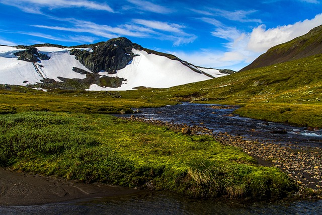
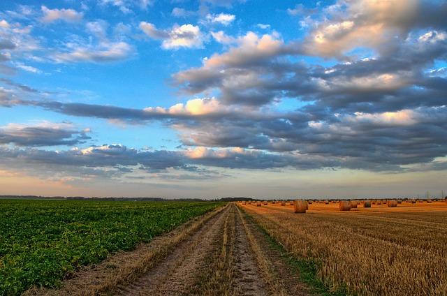
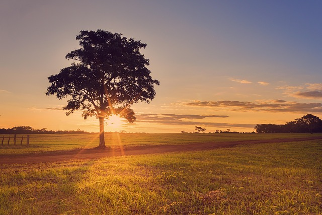

Utilizando imagens de paisagens, livres de direitos autorais
Belas paisagens ao redor do globo.
Voltar para Hiperlinks
Paisagem montanhosa, foto tirada por Fulano de tal a beira do rio

Campo rural de algum sitio ao fim da tarde, fotógrafo Ciclano

Estrada de terra no interior da Irlanda, fotos tiradas por ciclaninho
